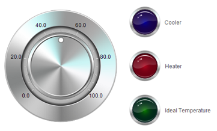
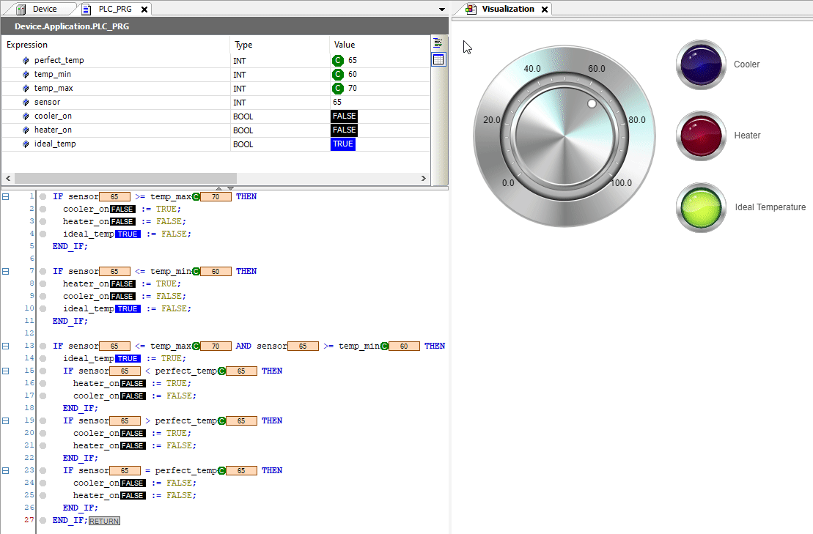

Introduction
Until now I’ve used OpenPLC for all my PLC (ladder logic, structured text) projects, as it’s very user-friendly and it makes using an Arduino as a PLC very simply. However, as I was studying LL and ST, another piece of software kept being mentioned - CODESYS.
According to CODESYS, they are “the leading manufacturer-independent IEC 61131-3 automation software for engineering control systems”. Compared with OpenPLC, it is much more feature-rich (and more complex), able to interface with a large number of PLCs. However, the reason I was interested in it is for one particular feature it has that OpenPLC doesn’t - you can make your own basic HMI (human-machine interfaces) with it.
Learning CODESYS
This video series, although a few years old, is very good for covering the basics in a short, concise manner.
Playlist: https://www.youtube.com/playlist?list=PLimc0qc7y0tQ0aZnk3d9rkLUAUnJ-sLzv
First video, which covers LL and HMI:
Temperature Control HMI
In OpenPLC I had a steady(ish) state project (both LL and ST) which turned on a heater or cooler based on the value of a sensor - the idea being, in a very simple way, to keep the temperature between 60° and 70°, perfect for your cup of tea or coffee.
I thought I’d use this same project (in ST form) as a way to experiment with creating an HMI with CODESYS.
Code
Copying the code was easy enough. No change needed.
IF sensor >= temp_max THEN
cooler_on := TRUE;
heater_on := FALSE;
ideal_temp := FALSE;
END_IF;
IF sensor <= temp_min THEN
heater_on := TRUE;
cooler_on := FALSE;
ideal_temp := FALSE;
END_IF;
IF sensor <= temp_max AND sensor >= temp_min THEN
ideal_temp := TRUE;
IF sensor < perfect_temp THEN
heater_on := TRUE;
cooler_on := FALSE;
END_IF;
IF sensor > perfect_temp THEN
cooler_on := TRUE;
heater_on := FALSE;
END_IF;
IF sensor = perfect_temp THEN
cooler_on := FALSE;
heater_on := FALSE;
END_IF;
END_IF;
Variables
Where OpenPLC has a table at the top for the variables, CODESYS has them in code form. Constant variables are defined/initialised separately. But, still, it’s pretty simple.
PROGRAM PLC_PRG
VAR CONSTANT
perfect_temp: INT := 65;
temp_min: INT := 60;
temp_max: INT := 70;
END_VAR
VAR
sensor: INT;
cooler_on: BOOL;
heater_on: BOOL;
ideal_temp: BOOL;
END_VAR
Note that as this isn’t being transferred to run on an Arduino with the 16-bit analogue input, we can forget the strange values; instead we can simply use the ideal ones of 60, 65, and 70.
HMI
The videos linked to above explain how to create the HMI. I used a potentiometer to simulate the sensor, then three lights to simulate the outputs - a blue light for the cooler, a red light for the heater, and a green light for when your cup of tea or coffee is within the ideal temperature range.

Simulation
Once it’s all in place, you can build, log in, and debug (again, explained in the above videos), and then we get something that looks like this.

Pretty cool! Note how the values appear live in the code, and the variables table, and are reflected in the HMI, which would make debugging more advanced projects much simpler than with OpenPLC.
Comments?
Feel free to comment on my LinkedIn post.